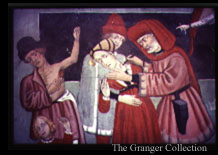

Q. How do we treat the disease?Sadly, it seems that despite all our knowledge, we as doctors are powerless to change the course of the infection once it is established. Many doctors have tried anyway, with little success, and at great risk to themselves. In addition to the usual measures of proper food and drink, purgation, bloodletting, medicines, and disinfection, some of my colleagues have advised burning aromatic herbs, applying hot plasters, or lancing the buboes to drive the contamination from the body. I find more honesty in the words of French doctor Gui de Chauliac, who wrote that "physicians could give no help at all. Even if they dared visit the sick, they achieved nothing, and earned no fees, for almost all plague victims died."
|